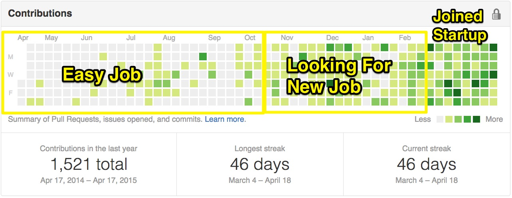

3 months ago I joined RaiseMore, an OKC startup. This was coming from a job as a web developer for a large university… let’s just say the change in pace was noticeable.

The amount of sheer growth and fulfillment made the job switch absolutely worth it! I love working hard with a team of dedicated and talented folks who are ham-bent on changing the world.
What follows is just me pausing moment, reflecting on 10 lessons I’ve learned.
Slack is the heartbeat of our company. It’s a hive consciousness of where things are at and how things are going. This includes everything from what bugs are coming in, to what code is shipping out.
This focus on asynchronous/automated communication minimizes the level of effort to keep everyone up-to-date.
Instead of stepping on each other’s toes, we seamlessly assign and re-assign ourselves where needed… picking up where others have left off.
My Favorite Slack Integrations:
1. Github
2. Hubot
3. Codeship
“Everything we build ships.”
—Rob
This philosophy lowers the barrier of entry for anyone to work any project. Meaningful progress is not impeded by a laundry list of steps required to deploy code (that complexity gets passed on to the robots).
A simple git push deploys ember apps, ionic apps, and rails apps. This includes running tests, automated deploys, and any necessary housekeeping.
I like codeship, but there are many options for getting started with CI.
Testing saves your bacon. Test everything (this includes javascript!).
Some combination of unit testing and integration testing is optimal. At the very least, fix bugs with tests (i.e. regression testing).
If you can hookup to code coverage, it can give you some cool stats on how you’re testing, but you still have to use your head. Automate this as part of your continuous integration.
“Our site is down” should never come from a client.
Using a service like Uptimerobot or Pingdom gives you the omnipresent-like ability to simply know when things go down.
Take it a step further and integrate this service into Slack!
This way you have the ability to warn clients proactively about outages and start fixing problems sooner.
Detect bugs that users are experiencing, don’t wait for them to email you. Integrate with an external service to listen for these bugs, log important details, and trigger alerts.
Git enables collaboration, it does not guarantee it. If your version control strategy is just pushing to master, Git acts more like an impressive undo button than a successful DVCS.
The solution is an agreeing on a branching model and having someone enforce it. I like Git flow.
Some potential benefits this gets you:
Here’s a great article on the topic.
Github is not just an external hard-drive for your git repos.
My process is typically:
git checkout -b feature/description-of-fix git push origin feature/description-of-fix Full transparency! Easy to get help from coworkers! Ties your progress into the issue tracker.
It’s a fun way to blow off steam and code for fun.
Our’s does everything from tornado tracking, to suggesting restaurants, to heckling us when we say “deadline” or “meeting”.
“You cannot sprint a marathon.”
—Rob
2 commits every day is better than 30 commits in one day. Reading 1 article and really getting something out of it is better than reading 2 books in a weekend.
“If you’re baking a cake, you can’t be afraid to break a few eggs.”
—Rob
Don’t be afraid to branch, make a few commits, solicit feedback, and throw away your code if it’s wrong. Just solicit feedback and make sure you are learning. Stay humble, positive, and eager to learn.
Write your own tests and don’t break other people tests.
Doing thinks the dumb way is ok as long as nobody dies, nobody is getting fired, and you are constantly getting smarter.
“Be careful… burn out looks a lot like ‘easy job’”
— Rick
If you are a junior developer and have any questions about this feel free to reach out. Or if you are a senior developer and think I’ve missed something important please feel free to make fun of me on the internet. ! :)

—Ember.js & Node—
Disciple of Jesus Christ & family man. Doer of JS & maker of webs.